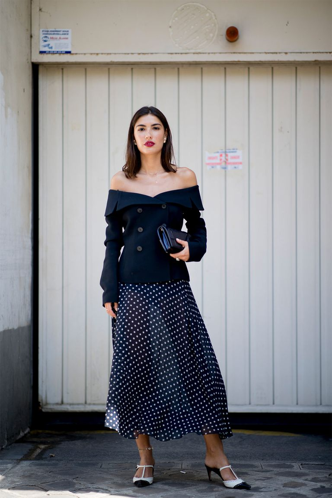

El look de tendencia del verano lo puedes conseguir en las rebajas de Zara Desde que empezó la Alta Costura de París las calles de la capital francesa respiran más elegancia que de costumbre. Ayer el 'street style' nos dejó un look con las tendencias del verano y nosotras sabemos cómo copiarlo en las rebajas de Zara. Las calles de París derrochan estilo durante todo el año, pero cada vez que se celebran las Semanas de la Moda el nivel sube unos cuantos peldaños. Todavía mucho más si coincide con la Alta Costura. Durante esta semana las firmas de moda están presentando sus colecciones Haute Couture y las fashionistas de todo el mundo se han dado cita en la capital francesa, regalándonos como siempre el mejor 'street style' de todo el año. Aunque ayer triunfaron los looks en blanco, hubo un estilismo en azul marino con lunares que nos volvió completamente locas y que quisimos copiar de inmediato. Por eso hemos revisado nuestras tiendas 'low cost' preferidas y hemos encontrado en Zara las dos prendas muy parecidas con las que estar igual de radiantes. Lo mejor es que están de rebajas y puedes hacerte con la blazer por 29,99 € y con un pantalón de lunares muy similar a la falda por 19,99 €.
Amaia de OT vuelve a elegir prendas de Bershka y Zara para uno de sus momentos más importantes Y además se confirma, con una foto, que Alfred y ella siguen juntos y tan enamorados como siempre. Te decimos de dónde son las prendas y todo lo que está pasando antes de su concierto en Madrid Hoy es el día. Esta noche es el concierto en Madrid "OT Bernabéu. Caminando Juntos" y no sabemos lo que nos depara ese momentazo, pero los preliminares están siendo una auténtica locura. Primero Aitana y Cepeda confirmando su relación en los primeros ensayos, ahora esto. Y es que el perfil oficial de instagram del concurso ha publicado una foto en la que confirma que, para tranquilidad de sus fans, Amaia y Alfred siguen juntos: Y además, por si fuera poco, Amaia nos ha regalado un lookazo de los suyos, de firmas low cost españolas y muy fiel a su estilo propio casual con un toque cool. Lleva un top anudado verde de la nueva temporada de Bershka (12,99 €) : Y lo lleva con un short de corte 'mom fit' también de la nueva temporada de Zara (19,95 €)